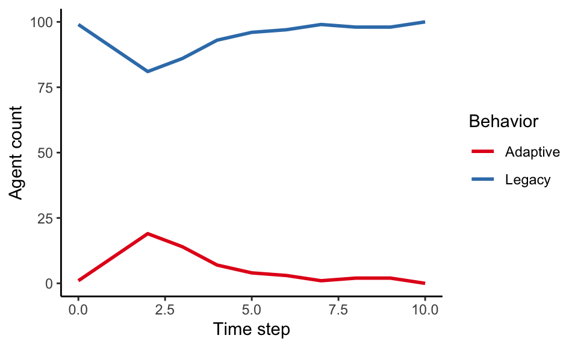
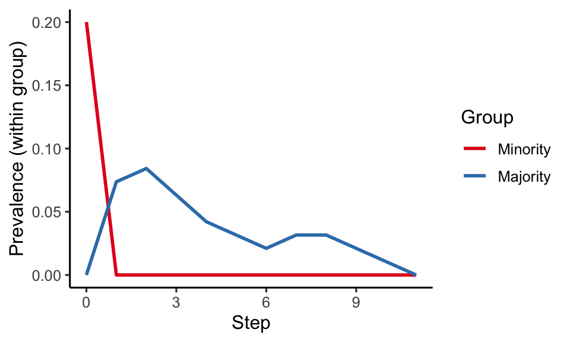

# Define partner selection for structured mixing.
structmix_successbiased_partner_selection <- function(focal_agent, model) {
# Extract focal agent's group.
group <- focal_agent$get_attribute("Group")
# Get homophily attribute from the focal agent.
h <- model$get_parameter("homophily")
# Use group lookup table to get either in-group or
# out-group prospective teachers.
group_lookup <- model$get_parameter("group_lookup")
group_names <- names(group_lookup)
# Prospective teachers stored as vector; from ingroup (if)
# or an outgroup (else)
prospective_teachers <-
purrr::list_c(ifelse(
sample_ingroup(h),
group_lookup[group],
group_lookup[setdiff(group_names, group)]
))
# Select an agent from the prospective teachers weighted by fitness
prob_weights <- purrr::map_vec(
prospective_teachers,
\(pt) pt$get_fitness()
)
return (sample(prospective_teachers, 1, prob = prob_weights)[[1]])
}
# Use our custom structured mixing function above to define the learning
# strategy for use as the `learning_strategy` for this model's `ModelParameters`.
structmix_successbiased_strategy <- socmod::LearningStrategy$new(
partner_selection = structmix_successbiased_partner_selection,
interaction = socmod::success_bias_interact,
model_step = socmod::iterate_learning_model,
label = "Structured mixing, success-biased"
)Prominent minority groups and transitive majority groups promote diffusion of adaptations
Communities most affected by climate change deserve to be included in promoting sustainable adaptive behavior. In the South Pacific Island nations, Indigenous peoples may be a minority in terms of population size, but they could have a great impact on climate change adaptation. Indigenous peoples in a place have been adapting to a changing climate for possibly thousands of years.
Communities tend to have distinguishable groups if you look close enough. If this group structure does not affect the diffusion of adaptations, we would probably leave it out to focus on other more significant factors. However, the South Pacific Island case presents an important example of when it is important to include this group structure.
Group structure, in the South Pacific Islands case and in general, defined by the size of each group and how frequently groups interact with others from within their own group or between groups. These frequencies are set by the homophily of each group, which measures how much more frequent within-group versus between-group interactions are. Homophily arises due to personal choice, called choice homophily, or involuntarily due to circumstance, called induced homophily (Kossinets and Watts 2009). If you like a certain type of food, and you go to a restaurant that serves that food, your preference for that food leads you to encounter others with similar taste, an instance of choice homophily.
For some demographic group divisions, such as socio-economic status and race, homophily is heavily induced by, for example, historical legal and other obstacles to home ownership and other economic opportunity that led to economically and racially segregated neighborhoods, even after “segregation” became illegal. In these cases, induced homophily would dominate, say, in explaining why certain people of certain races tend to be geographically co-located, i.e., geographically assorted, since we can assume that for most people this was not a conscious choice.
In the models in this example we do not distinguish between types of homophily. They are important to distinguish when we go to interpret our models in real-world situations. Interpreting results like this can help guide real-world measurements of homophily by guiding researcher intuition for which measurements may the most significant.
In 2023 some colleagues and I developed an agent-based model of adaptation diffusion in a model population composed of a minority group and a majority group and analyzed how the asymmetric homophily of each group affected the diffusion of a model adaptation. Homophily is the degree to which We found that diffusion could be promoted by harnessing minority knowledge of adaptive behaviors at the outset of some hypothetical intervention, while majority groups could support adaptation by rapid spread in tight-knit communities (Turner et al. 2023).
This is just one of many possible formulations of a model of adaptation diffusion in homophilous networks. Here I demonstrate adaptation diffusion modeling with homophily network models in a somewhat simplified form, which we can call structured mixing with symmetric homophily. Structured mixing does not use a social network. Instead, one agent is selected at random from one group or the other. Agents select a group at random to learn from, weighted by the symmetric homophily, i.e., the global homophily, identical for each group:
\[ \Pr(\text{Agent learns within group}) = \frac{1 + h}{2} \]
The probability the agent learns from an outgroup is just the complement of this. In this setup there is only one outgroup.
Model setup
The main complication in using homophily-structured mixing is that one must have a way to rapidly look up who is in what group in order to sample interaction partners. One complication that is shared with alternative implementations is setting up who in which group will start with the adaptive behavior.
To take care of the first complication, we leverage socmod::LearningStrategy, the class that encapsulates the three functions that define how learning works: partner_selection, iteration, and model_step functions, which comprise the main iteration loop when run_trial is used to simulate model dynamics. Here is how we define the structured mixing learning strategy, first defining the partner selection function where homophilic, success-biased partner selection takes place:
In the above snippet, sample_ingroup is a function that returns T with probability 0.5*(1 + homophily) (and F with the complementary probability, 0.5(1 - homophily)). This function is included of the script turner-etal-2023-philtransb/model.R, which we source below. The snippets above and below are not live in this example.
We now use this partner selection routine in our definition of the full model, pasted below. In the function definition we use the
make_minmaj_structmix <- function(n_agents = 100,
minority_fraction = 0.05,
homophily = c(0.0),
start_group = "Minority",
social_learning_strategy =
structmix_successbiased_strategy,
adaptive_fitness = 1.4,
legacy_fitness = 1.0) {
# Set up agents here!
n_minority <- round(n_agents * minority_fraction)
n_majority <- n_agents - n_minority
agents_groups <- c(rep("Minority", n_minority), rep("Majority", n_majority))
assertthat::are_equal(length(agents_groups), n_agents)
agents <- purrr::imap(
agents_groups, \(group, a_idx) {
a <- socmod::Agent$new(
id = a_idx,
name = paste0("a", a_idx),
behavior = "Legacy",
fitness = legacy_fitness
)
# Currently this returns nothing, so need to set after creation.
a$set_attribute("Group", group)
return (a)
}
)
group_lookup <- make_group_lookup(agents)
assertthat::are_equal(group_lookup$Minority, n_minority)
assertthat::are_equal(group_lookup$Majority, n_majority)
# Initialize one or two agents with the adaptive behavior.
if (start_group == "Both") {
min_seed <- sample(group_lookup$Minority, 1)[[1]]
maj_seed <- sample(group_lookup$Majority, 1)[[1]]
min_seed$set_behavior("Adaptive")
maj_seed$set_behavior("Adaptive")
min_seed$set_fitness(adaptive_fitness)
maj_seed$set_fitness(adaptive_fitness)
} else if (start_group %in% c("Minority", "Majority")) {
seed <- sample(group_lookup[[start_group]], 1)[[1]]
seed$set_behavior("Adaptive")
seed$set_fitness(adaptive_fitness)
} else {
stop("start_group must be 'Minority', 'Majority', or 'Both'")
}
abm <- socmod::make_abm(
model_parameters = socmod::make_model_parameters(
learning_strategy = social_learning_strategy,
graph = igraph::make_empty_graph(n_agents),
n_agents = n_agents,
homophily = homophily,
start_group = start_group,
adaptive_fitness = adaptive_fitness,
legacy_fitness = legacy_fitness,
group_lookup = group_lookup
),
agents = agents
)
return (abm)
}source("model.R")
abm <- make_minmaj_structmix(adaptive_fitness = 1.2, homophily = 0.5)
trial <- socmod::run_trial(abm, stop = socmod::fixated)
socmod::plot_adoption(trial, tracked_behaviors = c("Legacy", "Adaptive"))
This plots adoption for the whole population. It would be good to additional see adoption by group. We need a bit more customization to plot this:
library(magrittr)
group_prevalence <- function(trial, tracked_behaviors = c("Legacy", "Adaptive")) {
n_agents <- trial$model$get_parameters()$n_agents
groups <- purrr::map_vec(trial$model$agents, ~ .x$get_attribute("Group"))
unique_groups <- unique(groups)
group_counts <- as.list(table(groups))
ret <-
trial$get_observations() %>%
dplyr::mutate(
Group =
factor(
purrr::map_vec(
agent,
\(aname) trial$model$get_agent(aname)$get_attribute("Group")
),
unique_groups
),
Behavior =
factor(Behavior, tracked_behaviors)
) %>%
dplyr::group_by(t, Group, Behavior) %>%
dplyr::summarise(Count = dplyr::n(), .groups = "drop")
# Not the prettiest, but it will do to add group-level prevalences. Other
# approaches didn't pan out.
#
# Initialize a prevalence column then set according values.
ret$Prevalence <- 0.0
ret[ret$Group == "Majority", ]$Prevalence <- ret[ret$Group == "Majority", ]$Count / group_counts$Majority
ret[ret$Group == "Minority", ]$Prevalence <- ret[ret$Group == "Minority", ]$Count / group_counts$Minority
ret <- tidyr::complete(ret, t, Group, Behavior,
fill = list(Count = 0, Prevalence = 0))
return (ret)
}
gprev <- group_prevalence(trial)
plot_by_group_prevalence <- function(trial) {
gprev <- group_prevalence(trial)
p <-
dplyr::filter(gprev, Behavior == "Adaptive") %>%
ggplot(aes(x = t, y = Prevalence, color = Group)) +
geom_line(linewidth = 1) +
xlab("Step") +
ylab("Prevalence (within group)") +
theme_classic(base_size = 12) +
scale_color_brewer(palette = "Set1")
return (p)
}Computational experiment
abm <- make_minmaj_structmix(adaptive_fitness = 1.2, homophily = 0.5)
trial <- socmod::run_trial(abm, stop = socmod::fixated)
p <- plot_by_group_prevalence(trial)
print(p)
# make_minmaj_structmix_byrow <- function(parameter_list) {
#
# }
#
# trials <- socmod::run_trials(
# model_generator = make_minmaj_structmix,
# n_trials_per_param = 2,
# stop = 5,
# adaptive_fitness = 1.2,
# homophily = c(-0.5, 0.0, 0.5)
# )
#
# print(trials)References
Kossinets, Gueorgi, and Duncan J. Watts. 2009. “Origins of homophily in an evolving social network.” American Journal of Sociology 115 (2): 405–50. https://doi.org/10.1086/599247.
Turner, Matthew A., Alyson L. Singleton, Mallory J. Harris, Ian Harryman, Cesar Augusto Lopez, Ronan Forde Arthur, Caroline Muraida, and James Holland Jones. 2023. “Minority-group incubators and majority-group reservoirs support the diffusion of climate change adaptations.” Philosophical Transactions of the Royal Society B: Biological Sciences 378 (1889). https://doi.org/10.1098/rstb.2022.0401.